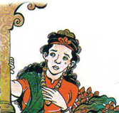
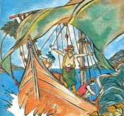
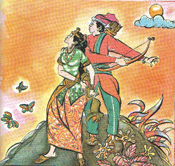

Putri Tandampalik
( Cerita Rakyat Sulawesi Selatan )
Dahulu, terdapat sebuah negeri yang bernama negeri Luwu, yang terletak di Sulawesi Selatan. Negeri Luwu dipimpin oleh seorang raja yang bernama La Busatana Datu Maongge, sering dipanggil Raja atau Datu Luwu.
Sebagian besar pekerjaan rakyat Luwu adalah petani dan nelayan. Datu Luwu mempunyai seorang anak perempuan yang sangat cantik, namanya Putri Tandampalik. Kecantikan dan perilakunya telah diketahui orang banyak. Termasuk di antaranya Raja Bone yang tinggalnya sangat jauh dari Luwu. Raja Bone ingin menikahkan anaknya dengan Putri Tandampalik. Datu Luwu menjadi bimbang, karena dalam adatnya, seorang gadis Luwu tidak dibenarkan menikah dengan pemuda dari negeri lain. Tetapi, jika lamaran tersebut ditolak, ia khawatir akan terjadi perang dan akan membuat rakyat menderita. Meskipun berat akibat yang akan diterima, Datu Lawu memutuskan untuk menerima pinangan itu.
Keesokan harinya, terjadi kegaduhan di negeri Luwu. Putri Tandampalik jatuh sakit. Sekujur tubuhnya mengeluarkan cairan kental yang berbau anyir dan sangat menjijikkan. Para tabib istana mengatakan Putri Tandampalik terserang penyakit menular yang berbahaya. 
Setelah berpikir dan menimbang-nimbang, Datu Luwu memutuskan untuk mengasingkan anaknya. Keputusan itu dipilih Datu Luwu dengan berat hati. Putri Tandampalik tidak berkecil hati atau marah pada ayahandanya. Lalu ia pergi dengan perahu bersama beberapa pengawal setianya. Sebelum pergi, Datu Luwu memberikan sebuah keris pada Putri Tandampalik, sebagai tanda bahwa ia tidak pernah melupakan apalagi membuang anaknya.
Setelah berbulan-bulan berlayar tanpa tujuan, akhirnya mereka menemukan sebuah pulau. Pada suatu hari Putri Tandampalik duduk di tepi danau. Tiba-tiba seekor kerbau putih menghampirinya. Kerbau bule itu menjilatinya dengan lembut. Semula, Putri Tandampalik hendak mengusirnya. Tapi, hewan itu tampak jinak dan terus menjilatinya. Akhirnya ia diamkan saja. Ajaib! Setelah berkali-kali dijilati, luka berair di tubuh Putri Tandampalik hilang tanpa bekas. Kulitnya kembali halus dan bersih seperti semula. Putri Tandampalik terharu dan bersyukur pada Tuhan, penyakitnya telah sembuh. 
Sementara, nun jauh di Bone, Putra Mahkota Kerajaan Bone sedang berburu. Ia ditemani oleh Anre Guru Pakanranyeng Panglima Kerajaan Bone dan beberapa pengawalnya. Putra Mahkota tidak sadar kalau ia sudah terpisah dari rombongan dan tersesat di hutan. Malam semakin larut, di kejauhan ia melihat seberkas cahaya. Ternyata cahaya itu berasal dari sebuah perkampungan yang letaknya sangat jauh. Sesampainya di sana, Putra Mahkota memasuki sebuah rumah yang nampak kosong. Betapa terkejutnya ia ketika melihat seorang gadis cantik sedang menjerang air di dalam rumah itu. Gadis cantik itu tidak lain adalah Putri Tandampalik. Setelah beberapa hari tinggal di desa tersebut, Putra Mahkota kembali ke negerinya. Anre Guru Pakanyareng mengetahui apa yang dirasakan oleh anak rajanya itu, ia pun segera menghadap Raja Bone dan menceritakan semua kejadian yang mereka alami di pulau Wajo. "Hamba mengusulkan Paduka segera melamar Putri Tandampalik," kata Anre Guru Pakanyareng. Raja Bone setuju dan segera mengirim utusan untuk meminang Putri Tandampalik.
Ketika utusan Raja Bone tiba di Pulau Wajo, Putri Tandampalik tidak langsung menerima lamaran Putra Mahkota. Ia hanya memberikan keris pusaka Kerajaan Luwu yang diberikan ayahandanya ketia ia di asingkan. Putri Tandampalik mengatakan bila keris itu diterima dengan baik oleh Datu Luwu berarti pinangan diterima. 
Putra Mahkota segera berangkat ke Kerajaan Luwu sendirian. Setelah sampai di Kerajaan Luwu, Putra Mahkota menceritakan pertemuannya dengan Putri Tandampalik dan menyerahkan keris pusaka itu pada Datu Luwu. Datu Luwu dan permaisuri sangat gembira mendengar berita baik tersebut. Tanpa menunggu lama, Datu Luwu dan permaisuri datang mengunjungi pulau Wajo untuk bertemu dengan anaknya. Pertemuan Datu Luwu dan anak tunggal kesayangannya sangat mengharukan. Datu Luwu merasa bersalah telah mengasingkan anaknya. Tetapi sebaliknya, Putri Tandampalik bersyukur karena rakyat Luwu terhindar dari penyakit menular yang dideritanya. Akhirnya Putri Tandampalik menikah dengan Putra Mahkota Bone dan dilangsungkan di Pulau Wajo. Beberapa tahun kemudian, Putra Mahkota naik tahta. Beliau menjadi raja yang arif dan bijaksana.